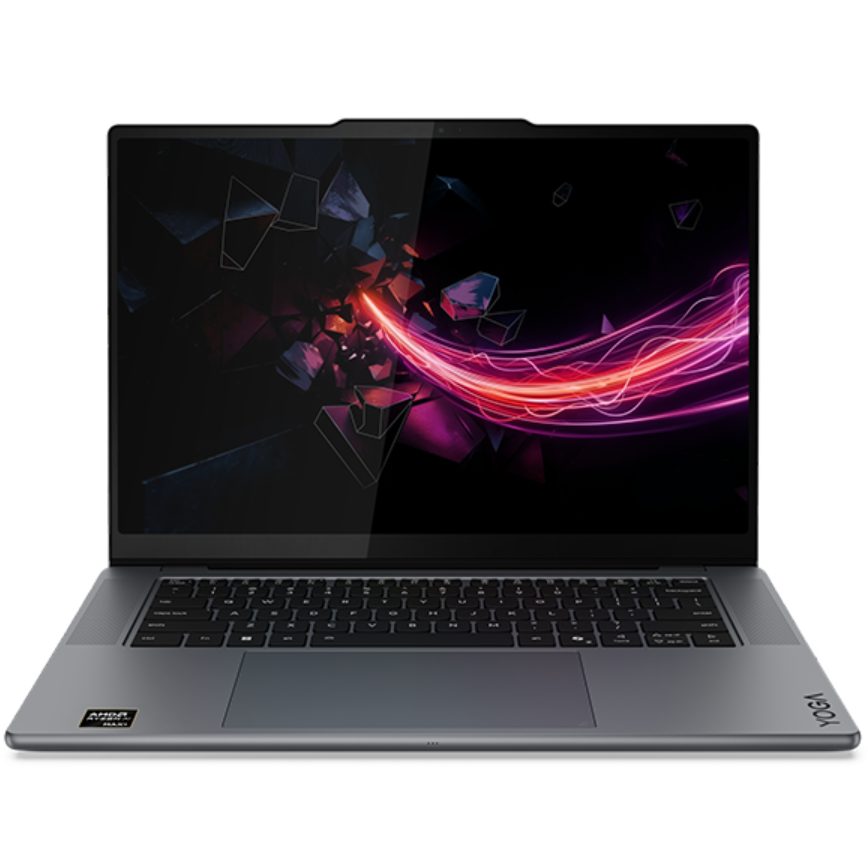
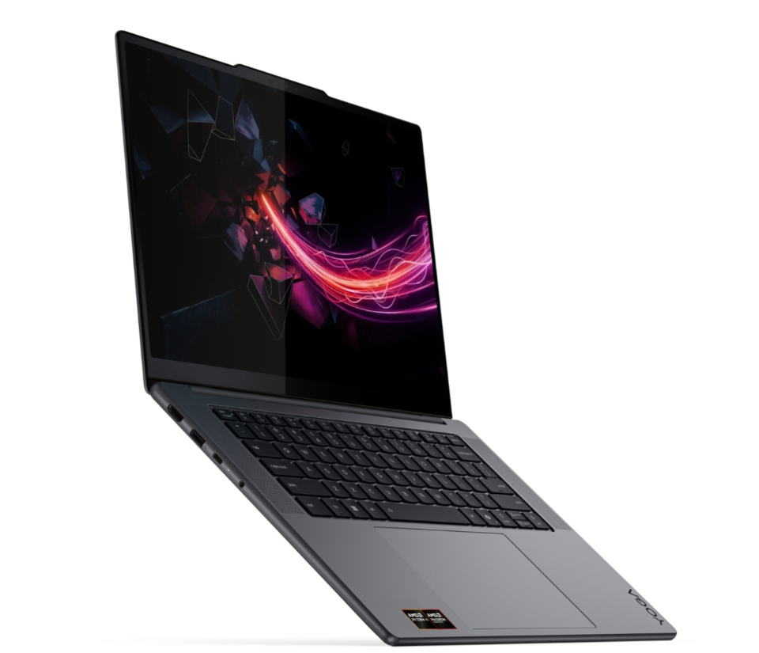

Trên tay Lenovo Yoga Pro 7

Đánh giá hiệu năng Lenovo Yoga Pro 7
|
 |
Sản phẩm: Lenovo Yoga Pro 7 là dòng máy tính xách tay mỏng nhẹ (1.59 kg) nhưng sở hữu cấu hình mạnh mẽ, mang lại khả năng duy trì hiệu năng ổn định trong cả công việc lẫn giải trí.
|
 |
Thông số kỹ thuật nổi bật
|
| Hiệu năng mạnh mẽ và ổn định | Sở hữu cấu hình cao cấp (CPU Intel Core Ultra 7 365H và GPU RTX 5050 8GB) nhưng vẫn duy trì nhiệt độ mát mẻ (khoảng 75°C) và hiệu năng ổn định trong thân máy gọn nhẹ. |
| Khả năng đa nhiệm xuất sắc | Trang bị sẵn 32GB RAM LPDDR5X tốc độ cao, cho phép mở hàng chục tab trình duyệt, chạy song song phần mềm nặng hoặc môi trường lập trình không lo thiếu bộ nhớ. |
| Tốc độ lưu trữ vượt trội | Ổ cứng SSD PCIe Gen4 dung lượng 1TB có tốc độ đọc/ghi rất nhanh, giúp rút ngắn thời gian khởi động máy, mở ứng dụng và tải game. |
| Màn hình chất lượng cao cho sáng tạo | Màn hình OLED 15.3 inch, độ phân giải 2.5K, tần số quét 165Hz, độ phủ màu 100% DCI-P3, sRGB, AdobeRGB mang lại hiển thị sắc nét, chuẩn màu. |
| Khả năng chơi game và làm việc đa năng | Đáp ứng tốt các tác vụ đồ họa, dựng video, chạy AI và chiến mượt các tựa game eSports lẫn bom tấn AAA nhờ card đồ họa rời. |
| Tính di động và thời lượng pin tốt | Mỏng nhẹ (chỉ nặng 1.59kg), thời lượng pin dùng hỗn hợp gần 9 giờ, hỗ trợ sạc nhanh USB-C tiện lợi khi di chuyển. |
| Khả năng nâng cấp RAM bị hạn chế | RAM được hàn trực tiếp lên bo mạch nên người dùng không thể tự nâng cấp thêm về sau. |
| Giá thành cao | Cổng kết nối tương đối ít do thiết kế mỏng nhẹ nhưng giá thành tương đối cao so với học sinh, sinh viên. |
| Dung lượng pin không quá lớn | Máy chỉ sở hữu viên pin dung lượng 54.8Wh, mặc dù đủ dùng cho các tác vụ hỗn hợp nhưng chưa phải mức cao đối với laptop trang bị cấu hình hiệu năng mạnh và card đồ họa rời. |
| Giới hạn khả năng lưu trữ ban đầu | Mặc dù có sẵn 1 slot SSD trống để mở rộng, dung lượng mặc định 1TB SSD có thể nhanh chóng bị đầy nếu thường xuyên lưu trữ game lớn hoặc dự án đồ họa, dựng video nặng. |
|
Trên tay Lenovo Yoga Pro 7 |
Đánh giá hiệu năng Lenovo Yoga Pro 7 |